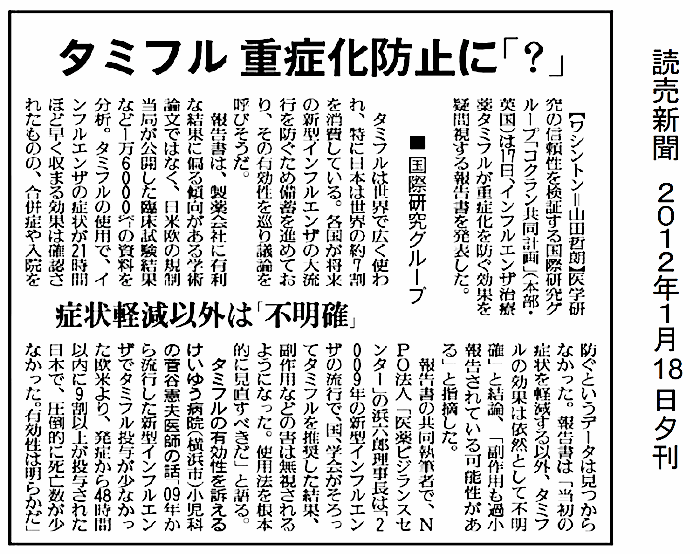

医学研究の信頼性を検証するための国際研究組織「コクラン共同計画」のノイラミニダーゼ阻害剤検討チームが、1月17日インフルエンザ用に用いられている薬剤タミフル（オセルタミビル）が、インフルエンザの重症化を防ぐという証拠は得られなかったと、その効果を疑問視する報告書を発表した（コクランライブラリーへの正式掲載は1月18日）。
読売新聞は1月18日付で、「タミフルは世界で広く使われ、特に日本は世界の約７割を消費している。各国が将来の新型インフルエンザの大流行を防ぐため備蓄を進めており、その有効性を巡り議論を呼びそうだ」と、以下のように報道した。
「報告書は、製薬会社に有利な結果に偏る傾向がある学術論文ではなく、日米欧の規制当局が公開した臨床試験結果など1 6000ページの資料を分析。タミフルの使用で、インフルエンザの症状が２１時間ほど早く収まる効果は確認されたものの、合併症や入院を防ぐというデータは見つからなかった。報告書は『当初の症状を軽減する以外、タミフルの効果は依然として不明確』と結論、『副作用も過小報告されている可能性がある』と指摘した。報告書の共同執筆者で、NPO法人『医薬ビジランスセンター』の浜六郎理事長は『2009年の新型インフルエンザの流行で、国、学会がそろってタミフルを推奨した結果、副作用などの害作用は無視されるようになった。使用法を根本的に見直すべきだ』と語る。」（2012年1月18日 読売新聞夕刊）。
けいゆう病院の菅谷医師は、読売新聞の報道に対して、「09年から流行した新型インフルエンザでタミフル投与が少なかった欧米より、発症から48時間以内に9割以上が投与された日本で圧倒的に死亡数が少なかった。有効性は明らかだ」と言ったと報道されている。
しかしながら、ランダム化比較試験の結果、入院を減らす効果のないものが、死亡率を減らすはずがない。しかも、速報No151で報告したとおり、タミフルを用いた人は、リレンザを用いた場合や、抗ウイルス剤を用いないよりも死亡率が高く、しかも12時間以内の死亡は4～6倍となることが分かっている。したがって、けいゆう病院の菅谷医師のコメントは間違いである。
日本では、読売新聞がこのように報道しただけであったが、コクランチームの、たび重なる要請にもかかわらず、製薬企業が情報を提供しないことに関して、国際的な関心が大きく高まってきている（海外情報リンクはこちら）。
また、収集できたデータで解析する限り、ノイラミニダーゼ阻害剤の合併症軽減効果は不明であり、ノイラミニダーゼ阻害剤の効果に関する根本的な問いかけをしている。
今回のレビューの要約と平易な言葉による要旨を翻訳する。
なお、ノイラミニダーゼ阻害剤による抗体産生をはじめ、免疫抑制については、別に解説しました。免疫抑制についてはこちらを